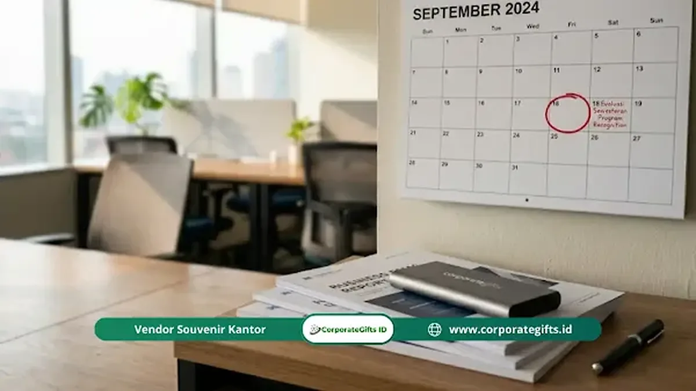

Corporate Gifts ID - Efektivitas program recognition diukur melalui kombinasi data kuantitatif seperti skor keterlibatan, tingkat retensi, dan partisipasi program, serta data kualitatif dari survei dan wawancara karyawan.
- Pengukuran efektivitas recognition memerlukan indikator kuantitatif dan kualitatif
- Tingkat partisipasi adalah indikator pertama yang mudah dipantau sejak awal
- Skor keterlibatan karyawan (eNPS atau Gallup Q12) adalah tolok ukur dampak jangka menengah
- Evaluasi minimal dilakukan setiap enam bulan untuk memastikan relevansi program
- Data recognition yang kuat membantu pemimpin membuat keputusan SDM berbasis bukti
Mengapa Pengukuran Program Recognition Itu Penting?
Program recognition yang tidak diukur tidak dapat ditingkatkan dan sulit dipertahankan karena manajemen tidak memiliki bukti nyata tentang dampaknya.
Pengukuran yang tepat membantu organisasi membuktikan nilai investasi dalam recognition, mengidentifikasi celah yang perlu diperbaiki, dan memastikan program terus relevan seiring perubahan kebutuhan karyawan.
Menurut kerangka analitik SHRM 2023, hanya 43% organisasi yang secara konsisten mengukur dampak program recognition mereka, padahal pengukuran adalah kunci keberlanjutan program.
Indikator Kuantitatif untuk Mengukur Program Recognition
Indikator kuantitatif memberikan data objektif tentang seberapa aktif program digunakan dan seberapa besar dampaknya terhadap metrik bisnis yang terukur.
Indikator kuantitatif utama yang perlu dipantau:
Tingkat Partisipasi Program
Persentase karyawan yang aktif berpartisipasi dalam program recognition, baik sebagai pemberi maupun penerima pengakuan.
Tingkat partisipasi di bawah 50% mengindikasikan masalah adopsi atau komunikasi program yang perlu segera diatasi.
Skor Keterlibatan Karyawan
Gunakan instrumen standar seperti Gallup Q12 atau survei eNPS (Employee Net Promoter Score) untuk mengukur perubahan keterlibatan karyawan sebelum dan sesudah implementasi program recognition.
Skor ini biasanya diukur setiap enam bulan atau tahunan.
Tingkat Retensi dan Turnover
Bandingkan tingkat turnover karyawan sebelum dan sesudah program recognition diluncurkan, dengan memisahkan data per divisi atau kelompok demografis untuk melihat pola yang lebih spesifik.
Jumlah Nominasi dan Penghargaan yang Diberikan
Pantau volume nominasi atau penghargaan yang diberikan per periode.
Peningkatan volume yang konsisten menandakan budaya recognition yang tumbuh, sementara penurunan bisa menjadi sinyal kelelahan atau ketidakrelevanan program.
Indikator Kualitatif untuk Melengkapi Data Kuantitatif
Data kuantitatif perlu dilengkapi dengan wawasan kualitatif agar organisasi memahami tidak hanya seberapa sering recognition terjadi, tetapi juga seberapa bermakna pengakuan tersebut bagi karyawan.
Metode pengumpulan data kualitatif:
- Survei kepuasan program: Pertanyaan terbuka tentang pengalaman karyawan terhadap program recognition, apakah mereka merasa dihargai dan apakah proses terasa adil
- Focus group discussion: Diskusi kelompok kecil untuk menggali persepsi mendalam yang tidak tertangkap dalam survei tertutup
- Wawancara exit: Tanyakan kepada karyawan yang keluar apakah perasaan tidak dihargai menjadi salah satu faktor keputusan mereka
- Wawancara stay: Tanyakan kepada karyawan yang bertahan apa yang membuat mereka memilih untuk tetap, termasuk peran recognition dalam keputusan tersebut
Bagaimana Frekuensi Evaluasi Program Recognition yang Ideal?
Evaluasi program recognition sebaiknya dilakukan secara bertahap dengan frekuensi yang disesuaikan dengan jenis data yang dikumpulkan.
Panduan frekuensi evaluasi yang umum direkomendasikan:
- Bulanan: Pantau tingkat partisipasi dan volume nominasi sebagai indikator operasional
- Kuartalan: Tinjau umpan balik karyawan tentang program dan identifikasi tren awal
- Semesteran: Evaluasi skor keterlibatan dan bandingkan dengan periode sebelumnya
- Tahunan: Lakukan tinjauan komprehensif terhadap seluruh program, termasuk relevansi kriteria, anggaran, dan format penghargaan berupa souvenir kantor dan cinderamata eksklusif
Evaluasi yang terlalu jarang menyebabkan masalah terakumulasi sebelum terdeteksi. Evaluasi yang terlalu sering tanpa data yang cukup menghasilkan keputusan yang prematur.

Cara Menggunakan Data Pengukuran untuk Meningkatkan Program
Data pengukuran hanya bernilai jika digunakan untuk membuat keputusan perbaikan yang konkret dan dapat diimplementasikan.
Langkah menggunakan data evaluasi secara efektif:
- Identifikasi divisi atau kelompok dengan partisipasi terendah dan selidiki penyebabnya
- Bandingkan skor keterlibatan antara karyawan yang pernah menerima recognition dengan yang belum pernah
- Tinjau apakah distribusi penghargaan merata lintas gender, usia, dan divisi
- Perbarui kriteria recognition jika perilaku yang diakui sudah tidak selaras dengan prioritas strategis terkini
- Komunikasikan hasil evaluasi kepada seluruh karyawan sebagai bukti bahwa umpan balik mereka didengar dan ditindaklanjuti
Pertanyaan Seputar Mengukur Efektivitas Program Recognition (FAQ)
Kesimpulan
Mengukur efektivitas program recognition bukan sekadar formalitas administratif.
Pengukuran yang konsisten dan berbasis data memungkinkan organisasi membuktikan nilai investasi, mengidentifikasi area perbaikan, dan memastikan program terus relevan dan bermakna bagi seluruh karyawan.
Mulai dengan indikator sederhana seperti partisipasi dan skor keterlibatan, lalu kembangkan sistem pengukuran yang lebih lengkap seiring program matang.
Disclaimer: Informasi dan metodologi pengukuran dalam artikel ini disusun berdasarkan praktik terbaik manajemen SDM dan standar evaluasi employee recognition di industri korporasi. Penerapan indikator dapat disesuaikan dengan skala dan struktur masing-masing perusahaan.